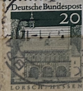
| SOURCE | TITLE| IMAGE MATCH | click to source page |
| iStock | German Stamp Of Lorsch Hessen Stock Photo - Download Image Now - Black Background, Color Image, Concepts - iStock | 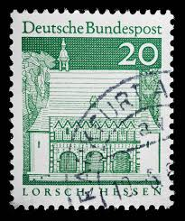 |
| Shutterstock | Germany Circa 1967 Cancelled Postage Stamp Stock Photo 2714005463 | Shutterstock | 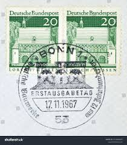 |
| Bob Shop | Looking for passat+b8 Buy online on Bob Shop. | 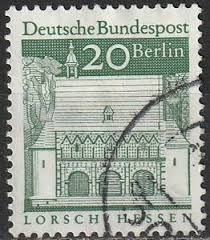 |
| one.bid | Germany - FRG 50 Deutsche Mark 1989 - Online auction / Online bidding - Price - OneBid | 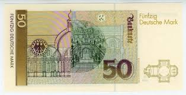 |
| Alamy | TIMBRE OBLITÉRÉ LORSCH. HESSEN. DEUTSCHE BUNDESPOST. 20 Stock Photo - Alamy | 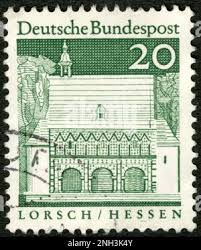 |
| Dreamstime.com | Lorsch, Germany - Entrance Gate Called `Torhalle` of Carolingian Imperial Abbey of Lorsch on Sunny Day with Blue Sky Editorial Stock Photo - Image of carolingian, lorsch: 201069598 | 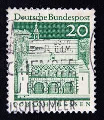 |
| eBay | Postkarte Passagierschiff Bremen Columbuskaje 22.05.1969 gel_402 | eBay | 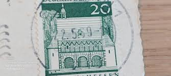 |
| iStock | Post Stamp From Ireland Stock Photo - Download Image Now - 1982, Architecture, Black Color - iStock | 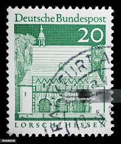 |
| Banknote Index | Banknote Index - Deutsche Mark | 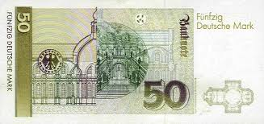 |
| Paper Money Guaranty | PMG | 1989-1993 Germany - Federal Republic 50 Deutsche Mark values and price guide | 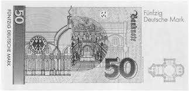 |
| Adobe | 50 Mark" Images – Browse 34 Stock Photos, Vectors, and Video | Adobe Stock | 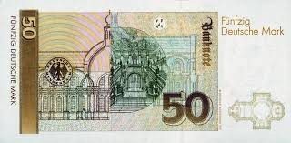 |
| notafilia-kp.com | 50 Mark, 1996 | notafilia-kp.com | 44078 | paper money | 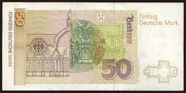 |
| Shutterstock | Germany Circa 1966 Postage Stamp Germany Stock Photo 2157921983 | Shutterstock | 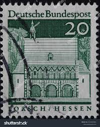 |
| WorthPoint | Funfzig Deutsche Mark banknote, 2 January 1989 | #677628992 | 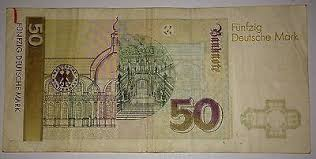 |
| Old german banknotes from before the euro 1948-2002 : r/papermoney | 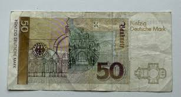 | |
| allnumis.com | 1,10 mark Hildesheim 1966, Cities and Provinces - Germany - Stamp - 5169 | 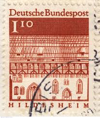 |
| SoundCloud | Stream JANX music | Listen to songs, albums, playlists for free on SoundCloud | 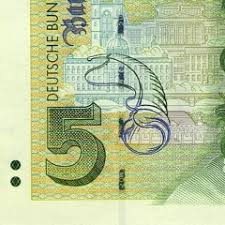 |
| eBay | 1996 German Paper Money for sale | eBay | 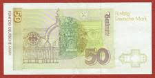 |
| eBay | GERMANY, DEUTSCHLAND 50 FUNFZIG DEUTSCHE MARK 1989 P-40a VF++ | eBay | 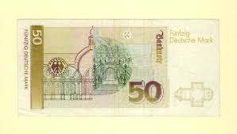 |
| one.bid | Germany - FRG 50 Deutsche Mark 1996 - Online auction / Online bidding - Price - OneBid | 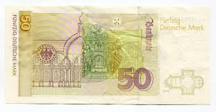 |
| Old-Cash | 50 Deutsche Marks | Old-Cash | 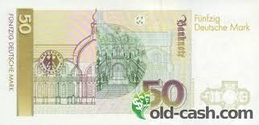 |
| eBay | Bundle MiNr. 1197 First Day Berlin stamped (AF 248) | eBay | 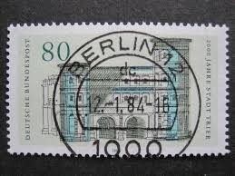 |
| Paper Money Guaranty | PMG | 1996 Germany - Federal Republic 50 Deutsche Mark values and price guide | 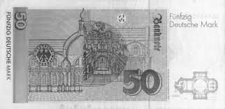 |
| eBay | Germany 50 Mark *** GREAT NUMBER *** **5444448** P-40b 1991 | eBay | 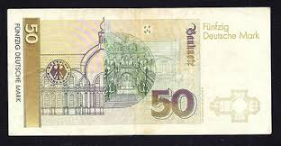 |
| MA-Shops | BRD 50 Mark 1996 GEM UNC. | MA-Shops | 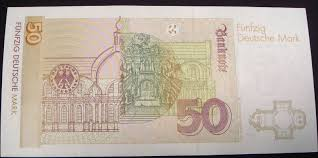 |
| MA-Shops | 50 Mark 1989 Germany Federal Republic Pick-40a SUPERB GEM UNC PMG 68 EPQ | MA-Shops | 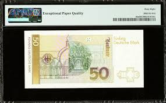 |
| Shutterstock | 19 Portico Lorsch Royalty-Free Images, Stock Photos & Pictures | Shutterstock | 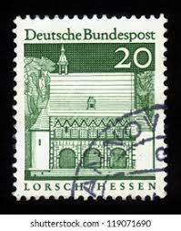 |
| eBay | GERMANY 50 MARKS P-45 1996 DEUTSCHE EURO AUNC NEUMAN DRAWING MONEY BANK NOTE | eBay | 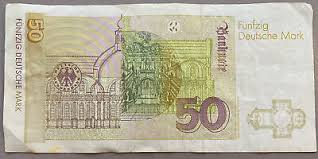 |
| Shutterstock | Presidential Office Building Zhongzheng District National Stock Photo 1674274993 | Shutterstock | 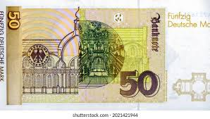 |
| Notgeld.com | Heesen bei Eilsen - set of 3 | Notgeld.com | 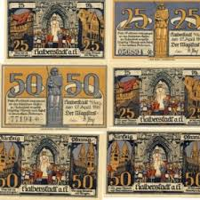 |
| allnumis.com | 50 Franken (19)79 sign Dr. Edmund Wyss / Dr. Pierre Languetin, 1976-1993 Issues - Switzerland - Banknote - 3190 |  |
| eBay | Germany- 50 Deutsche Mark 1996 P45 Uncirculated Grade 66 | eBay | 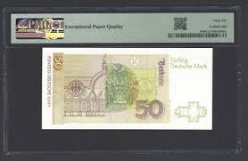 |
| eBay | 2013 $20 Twenty DOLLAR Bill Note Ink Error Bleed Thru Serial Numbers💥Fancy S-N | eBay | 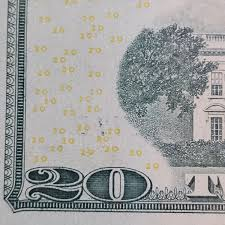 |
| eBay | Germany 50 Deutsch Mark 1993 PMG 58 Pick # 40c Federal Republic Series AZ | eBay | 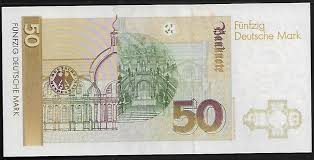 |
| eBay | BERNECK FICHTELGEBIRGE NOTGELD 10,25,50 PFENNIG 1921 BANKNOTES GERMANY (10223) | eBay | 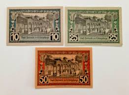 |
| | Katz Auction | Austria 10 Gulden 1880 | Katz Auction | 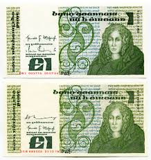 |
| Greysheet | Government of Gibraltar 1 pound B118as3,P20 Horizontal SPECIMEN / OF NO VALUE perf; all zero s/n Pricing Guide | The Greysheet | 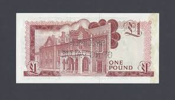 |
| London Coins | Ireland Pound 5 Pounds 10 Pounds Central Ban... : Buy and Sell World Banknotes : Auction Prices | 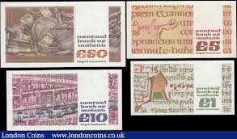 |
| eBay | Germany 50 Mark Banknote 1991 Vintage Old Circulated Paper Money Bank Bill P-40b | eBay | 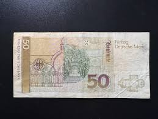 |
| eBay | GERMANY 50 MARKS 1996 Pick-45 XF S/N DK6157457K1 | eBay | 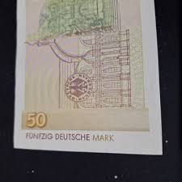 |
| IMAGO | Ausstellungseröffnung Echt oder Falsch bei Giesecke & Devirent: 1000 DM Originale Handzeichnung | 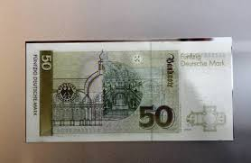 |
| violethour.net | Tamalpais Stamp Club | 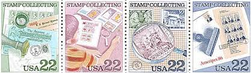 |
| RealBanknotes.com | Paper Money from Ireland | 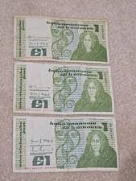 |
| Colby College | Mathematics 231 | 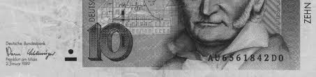 |
| 🇦🇹 5000 Schilling 1988 : r/Banknotes | 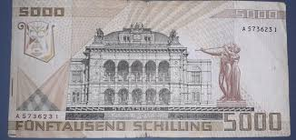 | |
| Blogger.com | Coins and Banknotes: German banknotes 50 Deutsche Mark banknote, Neumann. | 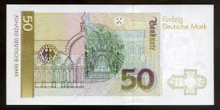 |
| Smithsonian Institution | 10 Pfennig Note, Coln, Germany, 1918 | National Museum of American History | 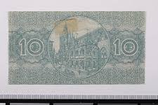 |
| Foronum | Banknote 50 Deutsche Mark 1996 | Germany | Foronum | 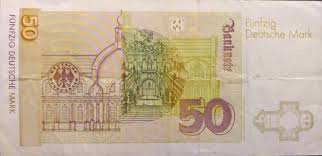 |
| Steven J. Murdoch | Software Detection of Currency | 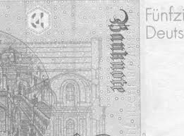 |
| Banknote World | Ireland 1 Pound Banknote, 1989, P-70d.8, UNC | 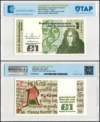 |
| allnumis.com | 5 Reichsmark 1942 (1. VIII.), 1942 Issue - Reichsbank - Germany - Banknote - 1477 | |
| Bob Shop | Germany & Colonies - BERLIN 1966 German Buildings from 12 Centuries ULH CV R71.50 SG B252 for sale in Durban (ID:671013822) | |
| Violity | 50 deutsche mark 1996 г. (104342405) - buy on Violity | |
| Old-Cash | 5000 Schilling | Old-Cash | |
| Watermarks.Info | Paper Watermarks - Bank Notes | |
| eBay | Germany. Notgeld. Halberstadt 3 х10, 25, 50 Ph 1921 | eBay | |
| Coin Talk | 2006 $20 bill. Misprint/error? | Coin Talk | |
| eBay UK | Machine Cancel Lightly Hinged European Stamps for sale | eBay UK | |
| 123RF | 02 09 2020 Divnoe Stavropol Territory Russia Postage Stamp Germany 1996 The 800th Anniversary Of Heidelberg Heidelberg Castle, Old Bridge At The City Gate, Holy Ghost C Cityscape Stock Photo, Picture and |